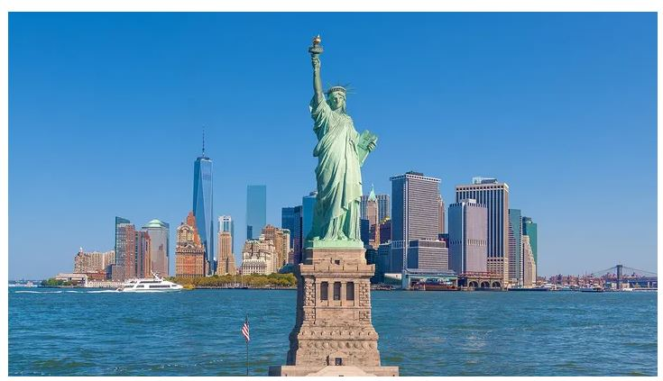

Time Square
This is one of the most popular parts of New York.
At Time Square, there are many activities you can enjoy such as watching shows at theaters, eating at great restaurants, and exploring at different stores.
This is one of the most popular parts of New York.
At Time Square, there are many activities you can enjoy such as watching shows at theaters, eating at great restaurants, and exploring at different stores.
It is one of the most iconic landmarks in the world.
This statue is 305 feet tall and holds a strong history which people travel across the world for.
While there may be many great parts of NYC, there are also cons of the city: